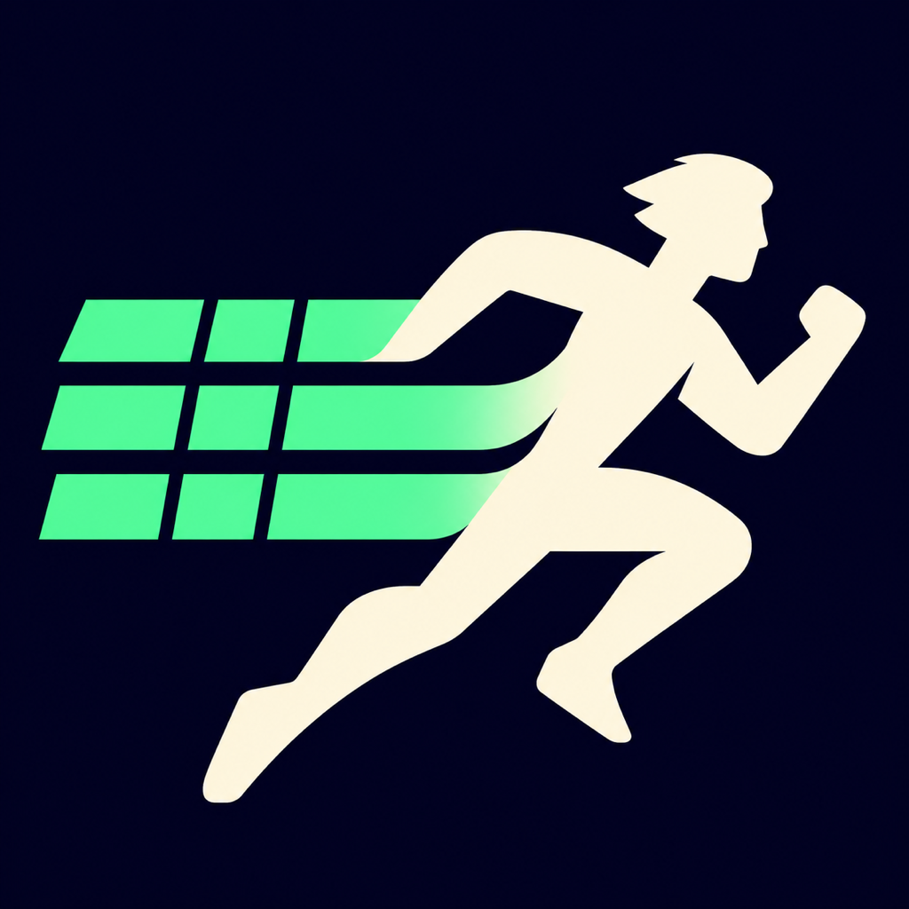

RunnerSync
Your Apple Watch workouts as a spreadsheet, updated automatically. One-time purchase, no account, no subscription, no server.
What it does
- Saves every workout from Apple Health to iCloud Drive › RunnerSync:
workouts.csv (Numbers, Excel, Google Sheets), workouts.json, and one GPX file per outdoor route.
- Updates by itself after each workout. You don't need to open the app.
- Includes distance, pace, heart rate, calories, elevation gain, cadence, running power, stride length, vertical oscillation and ground contact time.
- Kilometers or miles, comma or semicolon CSV (for Excel in Europe and South America), 9 languages.
- Optional: email the file after each workout, a fully automatic email after each workout (Gmail or the Shortcuts app), or a row per workout in your own Google Sheet.
Getting started
- Open RunnerSync and tap Allow Health Access, then Turn On All.
- Open the Files app › iCloud Drive › RunnerSync.
- Keep working out. The files update after each workout.
Automatic email after each workout
Gmail: RunnerSync › Settings › Connect Gmail. After every workout RunnerSync sends workouts.csv from your own Gmail. It can only send; it cannot read your email.
Any other email (Outlook, iCloud Mail and more):
- On your iPhone, add the RunnerSync Email shortcut. It asks for your email address once.
- Shortcuts app › Automation › + › Apple Watch Workout › Ends › Run Immediately › Next.
- Choose RunnerSync Email. Done.
Troubleshooting
- The file didn't update. Health data is locked while your iPhone is locked. Unlock it, or open RunnerSync and pull down to sync.
- No workouts or missing values. Settings › Health › Data Access & Devices › RunnerSync › Turn On All.
- Background updates stopped. Settings › General › Background App Refresh › RunnerSync on.
- On a Mac or PC. Mac: Finder › iCloud Drive › RunnerSync. Windows: iCloud for Windows or icloud.com.
Contact
Questions or feature requests: runsyncsupport@gmail.com
Privacy policy